library(tidyverse)
library(car)
library(ucimlrepo)
library(magrittr)
library(fastDummies)
library(olsrr)Fuel consuption prediction
Fuel consumption - prediction using linear Regression
Business context
- Problem Statement: Crie um modelo de regressão linear para prever o consumo de combustível
Data Prep
Libraries
Dataset
auto_mpg_info <- ucimlrepo::fetch_ucirepo(id=9)
data <- auto_mpg_info$data
auto_mpg <- data.frame(data$original)Variable Dictionary - Auto MPG
| Variable | Type | Description | Units | Missing Values |
|---|---|---|---|---|
mpg |
Continuous | Fuel consumption in miles per gallon (target variable). | Miles per gallon | No |
cylinders |
Discrete | Number of engine cylinders. | Integer | No |
displacement |
Continuous | Engine displacement. | Cubic inches | No |
horsepower |
Continuous | Engine horsepower. | Horsepower (hp) | Yes (6 values) |
weight |
Continuous | Vehicle weight. | Pounds | No |
acceleration |
Continuous | Time to accelerate (0 to 60 mph). | Seconds | No |
model_year |
Discrete | Model year of the vehicle. | Year | No |
origin |
Discrete | Origin of the vehicle (1 = USA, 2 = Europe, 3 = Japan). | Integer | No |
car_name |
Categorical | Name of the car. | Text | No |
Exploratory data analysis (EDA)
Para começar a conhecer melhor o dataset vou exibir uma pequena amostra usando as 6 primeiras linhas
head(auto_mpg) car_name cylinders displacement horsepower weight
1 chevrolet,chevelle,malibu 8 307 130 3504
2 buick,skylark,320 8 350 165 3693
3 plymouth,satellite 8 318 150 3436
4 amc,rebel,sst 8 304 150 3433
5 ford,torino 8 302 140 3449
6 ford,galaxie,500 8 429 198 4341
acceleration model_year origin mpg
1 12.0 70 1 18
2 11.5 70 1 15
3 11.0 70 1 18
4 12.0 70 1 16
5 10.5 70 1 17
6 10.0 70 1 15O summary abaixo fornece um resumo das variaveis do dataset e as principais medidas descritivas associadas. É possivel constatar que:
a variavael horsepower possui 6 registros NA
as variaveis car_name e origin podem ser tomadas como categoricas - a variavel model_year é uma variavel discreta
summary(auto_mpg) car_name cylinders displacement horsepower
Length:398 Min. :3.000 Min. : 68.0 Min. : 46.0
Class :character 1st Qu.:4.000 1st Qu.:104.2 1st Qu.: 75.0
Mode :character Median :4.000 Median :148.5 Median : 93.5
Mean :5.455 Mean :193.4 Mean :104.5
3rd Qu.:8.000 3rd Qu.:262.0 3rd Qu.:126.0
Max. :8.000 Max. :455.0 Max. :230.0
NA's :6
weight acceleration model_year origin mpg
Min. :1613 Min. : 8.00 Min. :70.00 Min. :1.000 Min. : 9.00
1st Qu.:2224 1st Qu.:13.82 1st Qu.:73.00 1st Qu.:1.000 1st Qu.:17.50
Median :2804 Median :15.50 Median :76.00 Median :1.000 Median :23.00
Mean :2970 Mean :15.57 Mean :76.01 Mean :1.573 Mean :23.51
3rd Qu.:3608 3rd Qu.:17.18 3rd Qu.:79.00 3rd Qu.:2.000 3rd Qu.:29.00
Max. :5140 Max. :24.80 Max. :82.00 Max. :3.000 Max. :46.60
Através do boxplot é possivel identificar a presença de outliers nas variaveis independentes horsepower e acceleration além da variavel dependente mpg.
continuous_variables <- c('displacement', 'horsepower', 'weight',
'acceleration', 'mpg')
plots <- list()
for (i in continuous_variables){
p <- auto_mpg %>%
ggplot(aes_string(x = i))+
geom_boxplot() +
ggtitle(paste('Distribution of', i))
plots[[i]] <- p
}
gridExtra::grid.arrange(grobs = plots, nrow = 2, ncol = 3)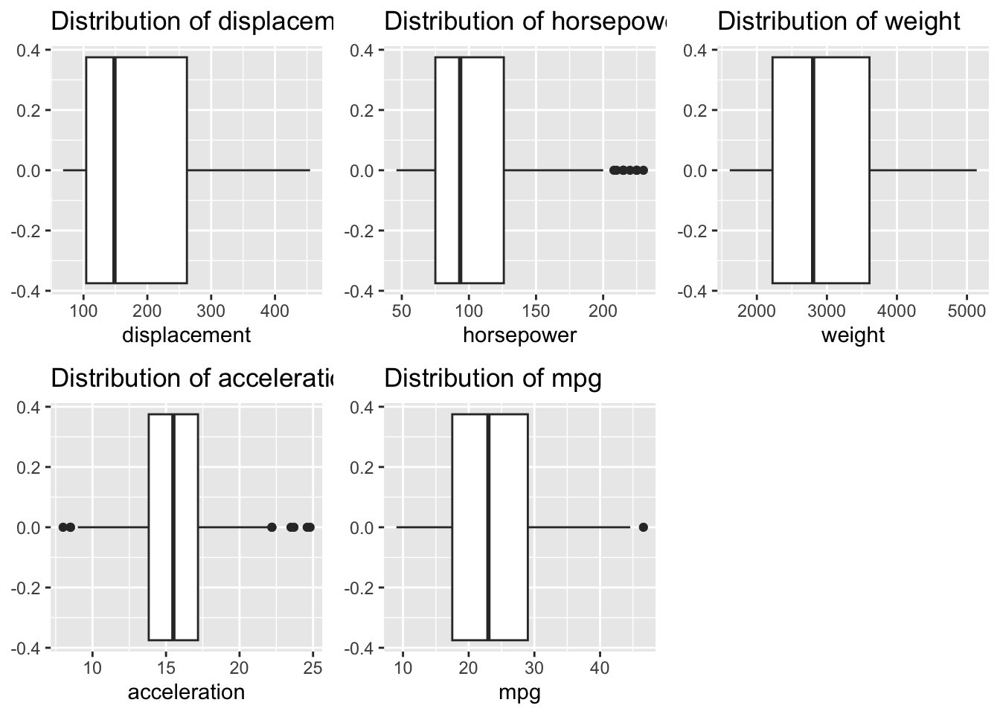
Os histogramas abaixo sao uteis na identificaçao do comportamento da distrubuiçao das variáveis. Os gráficos abaixo sugerem que apenas a variável acceleration apresenta distribuiçao de comportamento normal, as demais são assimétricas
hists <- list()
for (i in continuous_variables){
p <- auto_mpg %>%
ggplot(aes_string(x = i))+
# geom_histogram()+
geom_density()+
ggtitle(paste('Histogram of', i))
hists[[i]] <- p
}
gridExtra::grid.arrange(grobs = hists, nrow = 2, ncol = 3)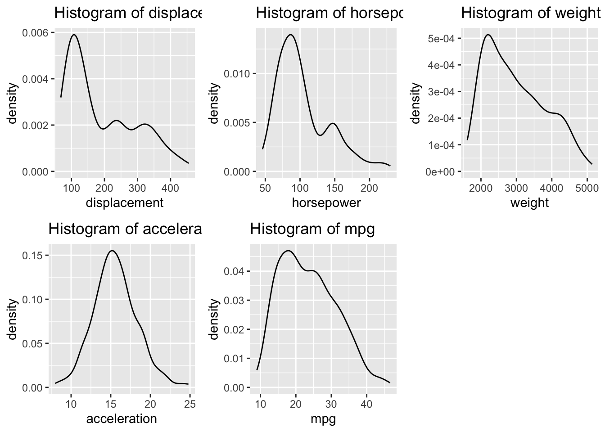
Análise das variaveis categoricas e discretas
cat_variables <- c('car_name', 'model_year', 'origin', 'cylinders')
bar_plt <- list()
for ( i in cat_variables){
b <- auto_mpg %>%
ggplot(aes_string(x = i)) +
geom_bar()
bar_plt[[i]] <- b
}
gridExtra::grid.arrange(grobs = bar_plt, nrow = 4)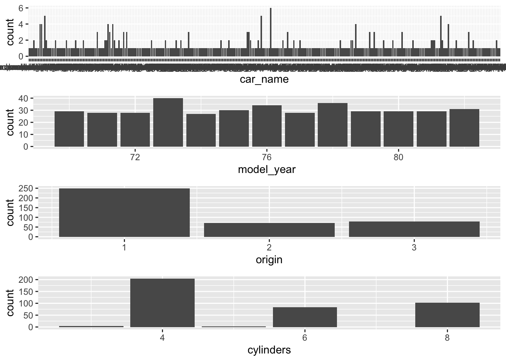
Na matriz de correlaçao abaixo é possível observar que as variaveis weight e displacement apresenda colinearidade o que nos da um indicativo de que uma vez presente no modelo podem ser causadoras de multicolinearidade.
auto_mpg_numeric <- auto_mpg %>%
dplyr::select(-car_name)
cor_matrix <- cor(auto_mpg_numeric)
corrplot::corrplot(cor_matrix, method = "color", type = "upper", tl.col = "black", tl.srt = 45,
tl.cex = 0.8, addCoef.col = "black", number.cex = 0.7, mar = c(0,0,2,0)) 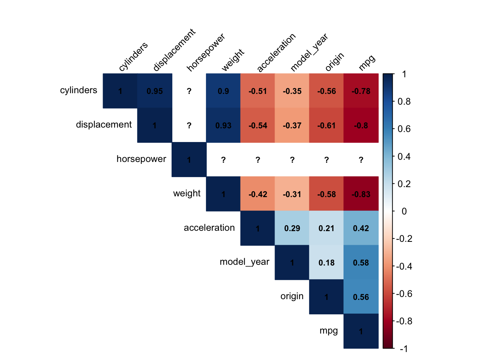
Examinando relaçao de linearidade com a variavel dependente
indep_num_var <- c('displacement', 'horsepower', 'weight',
'acceleration')
lin_plot <- list()
for (i in indep_num_var){
l <- auto_mpg %>%
ggplot(aes_string(x = i, y = "mpg"))+
geom_point()
lin_plot[[i]] <- l
}
gridExtra::grid.arrange(grobs = lin_plot, nrow = 3, ncol = 3)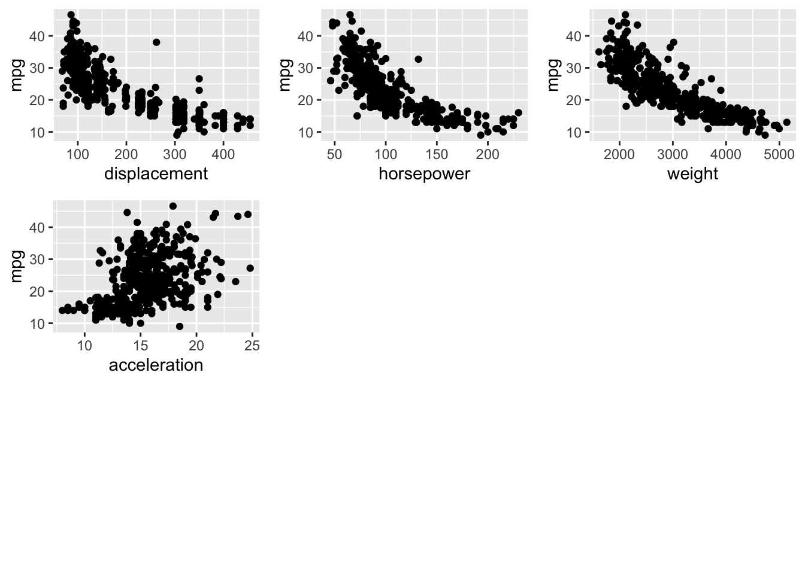
Transforming and clean-ups
Missing
Nesse caso decidi retirar os missing cases da base. Como o numero de missing representa apenas 1,5% dos data point entendo que nao haverá grande impacto na construcao de um modelo eficiente
auto_mpg <- auto_mpg %>%
dplyr::filter(!is.na(horsepower))Outliers
Como é possível perceber através dos graficos box_plot, as variaveis independentes horsepower e acceleration.
auto_mpg <- auto_mpg %>%
dplyr::mutate(horsepower = log10(horsepower+1),
acceleration = log10(acceleration+1))Categorical variables
Em relacao as variaveis categoricas foi possivel notar atraves do grafico de barras que o excessivo numero de categorias na variavel cars_name nao contribui para um modelo de grande eficiencia sem aumetar de maneira expressiva a sua complexidade. Dessa forma farei a remoçao dessa variavel do dataset.
auto_mpg <- auto_mpg %>%
dplyr::select(-car_name)Ja quanto a variavel origin a abordagem vai se baser na quantidade de cada categoria A tabela abaixo nos mostra que 62% nos carros sao da origem de codigo americanos (cod = 1), portanto farei um agrupamento dos demais em um único grupo
auto_mpg %>%
dplyr::group_by(origin) %>%
dplyr::summarise(total = dplyr::n()) %>%
dplyr::mutate(freq = total/sum(total))# A tibble: 3 × 3
origin total freq
<int> <int> <dbl>
1 1 245 0.625
2 2 68 0.173
3 3 79 0.202auto_mpg <- auto_mpg %>%
dplyr::mutate(origin =
dplyr::if_else(origin == 1, 'US',
'Non_US'))Em seguida utilizarei de variaveis dummy para representar a variavel origin. Dessa forma conseguirei utilizar do poder de explicacao dessa variavel no modelo
auto_mpg <- fastDummies::dummy_columns(auto_mpg,
select_columns = 'origin',
remove_first_dummy = TRUE,
remove_selected_columns = TRUE)Utilizarei a mesma abordagem para a variavel cylinders. A tabela abaixo mostra que mais de 50% dos carros sao modelos de 4 cilindros, modelos de 6 e 8 cilindoros possuem frequencia semelhante, 21% e 25% respectivamente. Modelos de 3 e 5 cilindros representam em torno de apenas 1%. Usando ainda o contexto de negocio, farei o agrupamento em apenas duas categorias: até 4 cilindros (up_to_four ) e a partir de 5 cilindros (five_more)
auto_mpg %>%
dplyr::group_by(cylinders) %>%
dplyr::summarise(total = dplyr::n()) %>%
dplyr::mutate(freq = total/sum(total))# A tibble: 5 × 3
cylinders total freq
<int> <int> <dbl>
1 3 4 0.0102
2 4 199 0.508
3 5 3 0.00765
4 6 83 0.212
5 8 103 0.263 auto_mpg <- auto_mpg %>%
dplyr::mutate(cylinders =
dplyr::if_else(cylinders > 4, 'five_more',
'up_to_four'))Em seguida utilizarei de variaveis dummy para representar a variavel cylinders. Dessa forma conseguirei utilizar do poder de explicacao dessa variavel no modelo.
auto_mpg <- fastDummies::dummy_columns(auto_mpg,
select_columns = 'cylinders',
remove_first_dummy = TRUE,
remove_selected_columns = TRUE)Muticolinearity
Após a transformação das variaveis categoricas é interessante voltar à analise de multicolinearidade.
cor_matrix <- cor(auto_mpg)
corrplot::corrplot(cor_matrix, method = "color", type = "upper", tl.col = "black", tl.srt = 45,
tl.cex = 0.8, addCoef.col = "black", number.cex = 0.7, mar = c(0,0,2,0)) 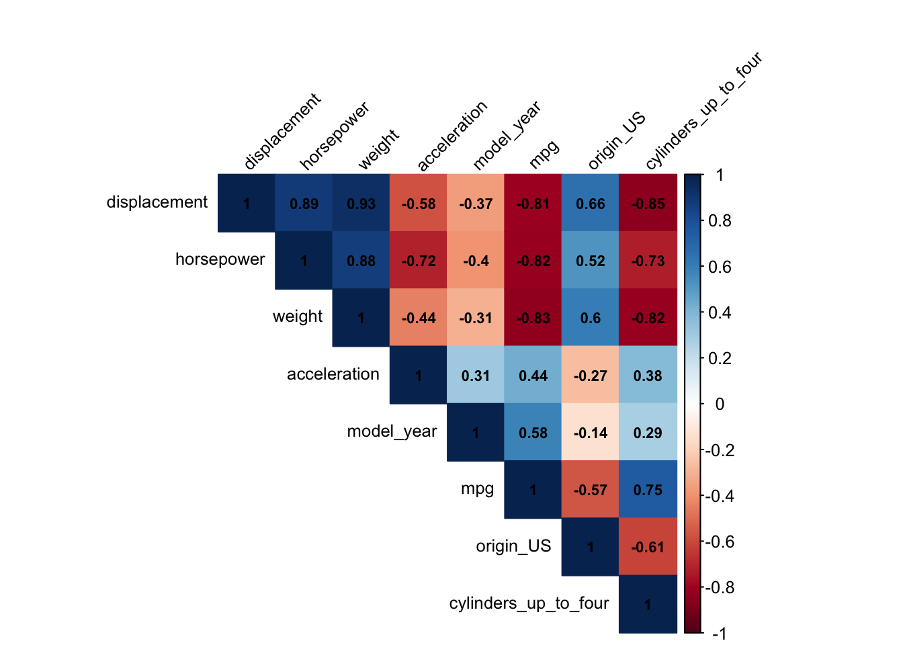
De acordo com a matriz acima as variaveis horsepower, weight, displacement e cylinders_up_to_four apresentam niveis de colinearidade excessivos entre si, por isso ferei a remoçao de algumas delas, tomando os seguintes critérios: - displacement possui os maiores niveis de colinearidade com as outras variaveis, por isso será removida - weight apresenta colinearidade com horsepower e discplacemente por isso tambem será removida, levando em consideracao que ao remove-la nao restará nenhuma relacao de colineridade entre as ariaveis independentes
auto_mpg <- auto_mpg %>%
dplyr::select(-displacement,
-weight)
cor_matrix <- cor(auto_mpg)
corrplot::corrplot(cor_matrix, method = "color", type = "upper", tl.col = "black", tl.srt = 45,
tl.cex = 0.8, addCoef.col = "black", number.cex = 0.7, mar = c(0,0,2,0)) 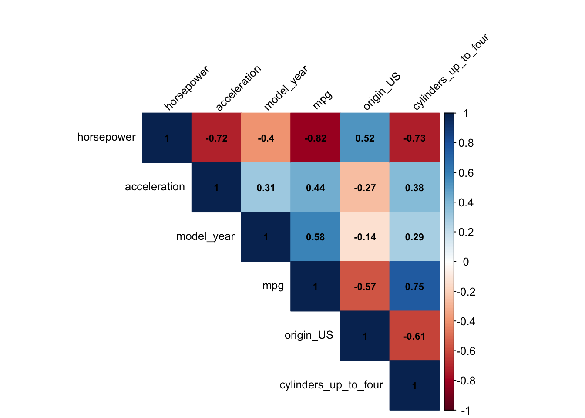
Model
A primeira tentativa de criacao do modelo utiliza uma abordagem simples e direta. Os resultados se mostraram bons, de certa forma: - Testes F e t satisfatorios (exceto para horsepower e acceleration) - R2 e adjusted R2 por volta de 0.8
first_model <- lm(mpg ~ ., data = auto_mpg)
summary(first_model)
Call:
lm(formula = mpg ~ ., data = auto_mpg)
Residuals:
Min 1Q Median 3Q Max
-8.8039 -1.8688 -0.2637 1.6017 13.1857
Coefficients:
Estimate Std. Error t value Pr(>|t|)
(Intercept) 70.06726 8.93831 7.839 4.47e-14 ***
horsepower -34.11579 2.25629 -15.120 < 2e-16 ***
acceleration -25.39779 3.27590 -7.753 8.06e-14 ***
model_year 0.68207 0.04778 14.274 < 2e-16 ***
origin_US -1.94015 0.42583 -4.556 7.00e-06 ***
cylinders_up_to_four 3.27628 0.52409 6.251 1.08e-09 ***
---
Signif. codes: 0 '***' 0.001 '**' 0.01 '*' 0.05 '.' 0.1 ' ' 1
Residual standard error: 3.176 on 386 degrees of freedom
Multiple R-squared: 0.8365, Adjusted R-squared: 0.8344
F-statistic: 394.9 on 5 and 386 DF, p-value: < 2.2e-16Checando se o metodo stepwise de selecao de variaveis será capaz de fornecer um modelo melhor. O metodo de elecao de variaveis apresentpou um modelo com metricas de eficiencia semelhantes ao primeiro modelo, utilizando menos variavies, ou seja, de menor complexidade mas mais assertivo.
step_model <- step(first_model, direction = 'both')Start: AIC=912.07
mpg ~ horsepower + acceleration + model_year + origin_US + cylinders_up_to_four
Df Sum of Sq RSS AIC
<none> 3894.7 912.07
- origin_US 1 209.46 4104.1 930.61
- cylinders_up_to_four 1 394.30 4289.0 947.88
- acceleration 1 606.48 4501.2 966.81
- model_year 1 2055.86 5950.6 1076.23
- horsepower 1 2306.78 6201.5 1092.42summary(step_model)
Call:
lm(formula = mpg ~ horsepower + acceleration + model_year + origin_US +
cylinders_up_to_four, data = auto_mpg)
Residuals:
Min 1Q Median 3Q Max
-8.8039 -1.8688 -0.2637 1.6017 13.1857
Coefficients:
Estimate Std. Error t value Pr(>|t|)
(Intercept) 70.06726 8.93831 7.839 4.47e-14 ***
horsepower -34.11579 2.25629 -15.120 < 2e-16 ***
acceleration -25.39779 3.27590 -7.753 8.06e-14 ***
model_year 0.68207 0.04778 14.274 < 2e-16 ***
origin_US -1.94015 0.42583 -4.556 7.00e-06 ***
cylinders_up_to_four 3.27628 0.52409 6.251 1.08e-09 ***
---
Signif. codes: 0 '***' 0.001 '**' 0.01 '*' 0.05 '.' 0.1 ' ' 1
Residual standard error: 3.176 on 386 degrees of freedom
Multiple R-squared: 0.8365, Adjusted R-squared: 0.8344
F-statistic: 394.9 on 5 and 386 DF, p-value: < 2.2e-16A comparacao da eficiencia dos modelos tambem pode ser feita atraves do calulo da metrica AIC e os resultos sugerem ligeira superioridade do primeiro modelo. Como a diferença é bem pequena continuarei a utilizar o modelo stepwise como principal
AIC(first_model)[1] 2026.522AIC(step_model)[1] 2026.522Redisuals
Normalidade de residuos
Os gráficos abaixo apontam para uma distribuiçao normal dos residuos, o que satisfaz uma das condiçoes conceituais do modelo
hist(step_model$residuals)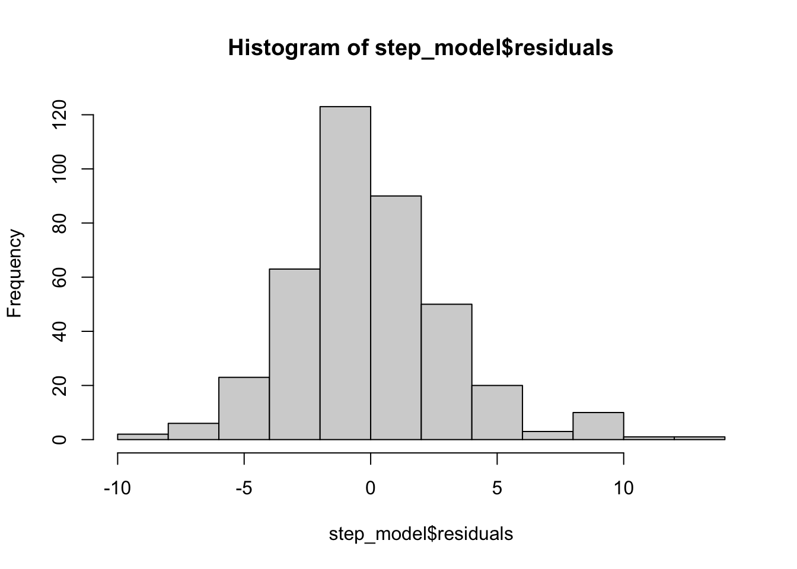
qqnorm(step_model$residuals)
qqline(step_model$residuals)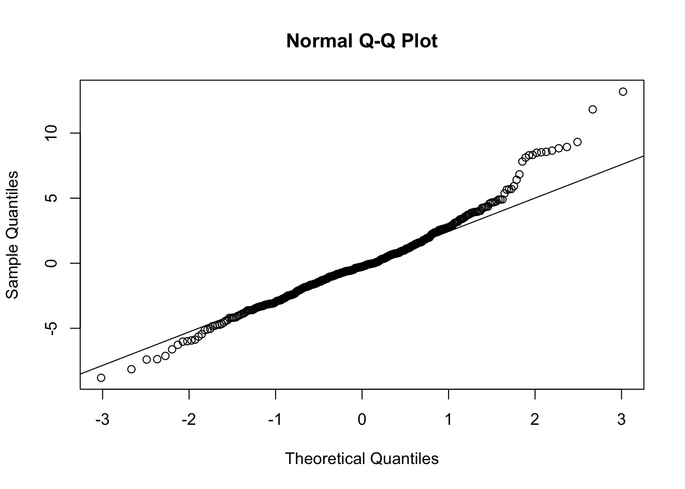
Abaixo apliquei o Shapiro test para confirmar a normalidade residual e ela nao foi atestada
shapiro.test(step_model$residuals)
Shapiro-Wilk normality test
data: step_model$residuals
W = 0.97276, p-value = 1.036e-06Homocedasticidade
O gráfico de residuos abaixo aponta a media zero para a variancia, o que é bom, mas ainda tenho duvidas em relacao a existencia de padrão na variancia dos residuos
olsrr::ols_plot_resid_fit(step_model)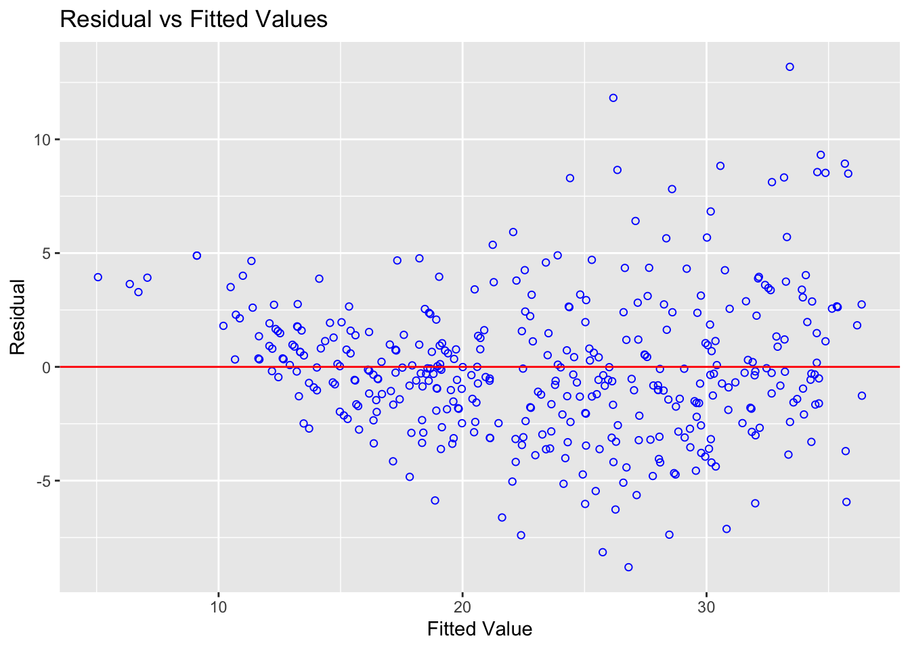
Aplicando o testde e Breusch-Pagan é possivel afirmar que a variancia nao é constante, portante o modelo não foi atestado
olsrr::ols_test_breusch_pagan(step_model)
Breusch Pagan Test for Heteroskedasticity
-----------------------------------------
Ho: the variance is constant
Ha: the variance is not constant
Data
-------------------------------
Response : mpg
Variables: fitted values of mpg
Test Summary
-------------------------------
DF = 1
Chi2 = 39.14838
Prob > Chi2 = 3.927896e-10 Multicolinearity
Para atestar a existencia de multicolinearidade no modelo utilizarei a analise VIF
olsrr::ols_vif_tol(step_model) Variables Tolerance VIF
1 horsepower 0.2325170 4.300761
2 acceleration 0.4445739 2.249345
3 model_year 0.8328903 1.200638
4 origin_US 0.6056517 1.651114
5 cylinders_up_to_four 0.3753154 2.664426Box Cox
As the residual analysis shows that its variance is not constant and its not normal distributed I’ll use Box-Cox transformation to make another try.
lambda <- car::powerTransform(auto_mpg$mpg)
auto_mpg$mpg_adj <- forecast::BoxCox(auto_mpg$mpg, lambda = lambda$lambda)Verificando o modelo com após a transformacao do y
auto_mpg_adj <- auto_mpg %>% dplyr::select(-mpg)
new_model <- lm(mpg_adj ~ ., auto_mpg_adj)
step_new_model <- step(new_model, direction = 'both')Start: AIC=-1175.06
mpg_adj ~ horsepower + acceleration + model_year + origin_US +
cylinders_up_to_four
Df Sum of Sq RSS AIC
<none> 18.973 -1175.06
- origin_US 1 0.9168 19.890 -1158.56
- cylinders_up_to_four 1 2.6620 21.635 -1125.60
- acceleration 1 3.5062 22.480 -1110.59
- model_year 1 11.4022 30.376 -992.59
- horsepower 1 15.7449 34.718 -940.21summary(step_new_model)
Call:
lm(formula = mpg_adj ~ horsepower + acceleration + model_year +
origin_US + cylinders_up_to_four, data = auto_mpg_adj)
Residuals:
Min 1Q Median 3Q Max
-0.65335 -0.14011 -0.01197 0.13141 0.79523
Coefficients:
Estimate Std. Error t value Pr(>|t|)
(Intercept) 8.299580 0.623866 13.303 < 2e-16 ***
horsepower -2.818521 0.157482 -17.897 < 2e-16 ***
acceleration -1.931119 0.228648 -8.446 6.20e-16 ***
model_year 0.050795 0.003335 15.231 < 2e-16 ***
origin_US -0.128361 0.029721 -4.319 2.00e-05 ***
cylinders_up_to_four 0.269195 0.036580 7.359 1.12e-12 ***
---
Signif. codes: 0 '***' 0.001 '**' 0.01 '*' 0.05 '.' 0.1 ' ' 1
Residual standard error: 0.2217 on 386 degrees of freedom
Multiple R-squared: 0.8711, Adjusted R-squared: 0.8695
F-statistic: 521.9 on 5 and 386 DF, p-value: < 2.2e-16Residuals normality distribution
hist(step_new_model$residuals)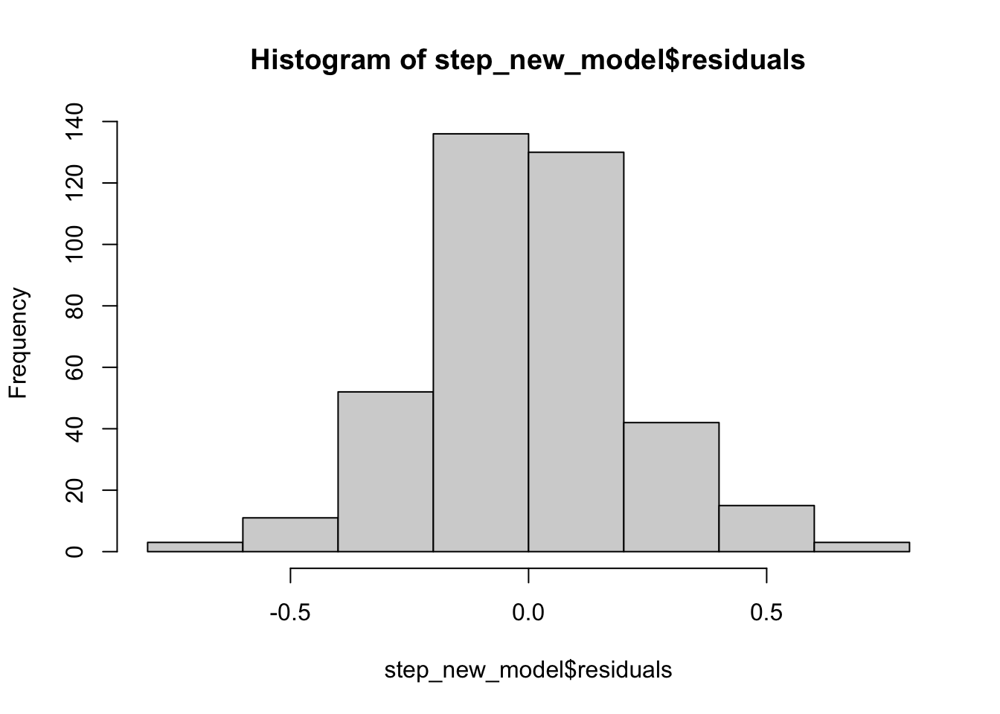
qqnorm(step_new_model$residuals)
qqline(step_new_model$residuals)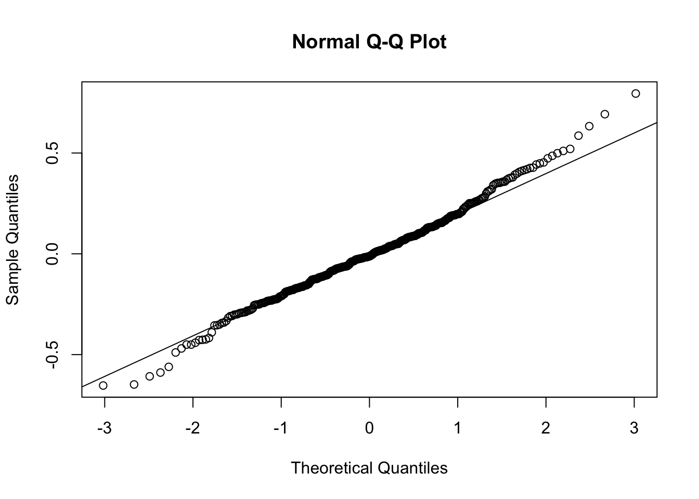
shapiro.test(step_new_model$residuals)
Shapiro-Wilk normality test
data: step_new_model$residuals
W = 0.99177, p-value = 0.02867Multicolineartity
olsrr::ols_vif_tol(step_new_model) Variables Tolerance VIF
1 horsepower 0.2325170 4.300761
2 acceleration 0.4445739 2.249345
3 model_year 0.8328903 1.200638
4 origin_US 0.6056517 1.651114
5 cylinders_up_to_four 0.3753154 2.664426Homocedasticity test
olsrr::ols_plot_resid_fit(step_new_model)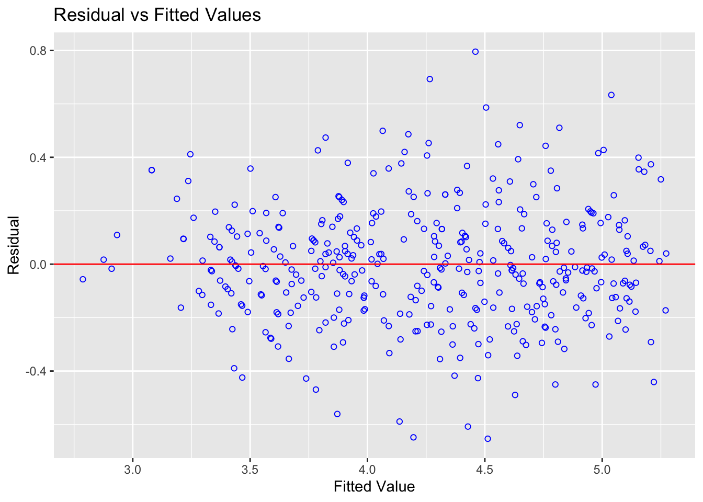
olsrr::ols_test_breusch_pagan(step_new_model)
Breusch Pagan Test for Heteroskedasticity
-----------------------------------------
Ho: the variance is constant
Ha: the variance is not constant
Data
-----------------------------------
Response : mpg_adj
Variables: fitted values of mpg_adj
Test Summary
-----------------------------
DF = 1
Chi2 = 3.578561
Prob > Chi2 = 0.05852984